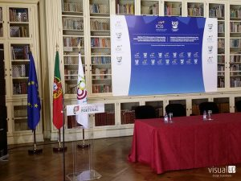
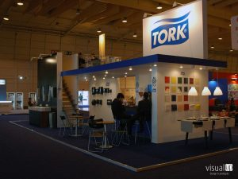
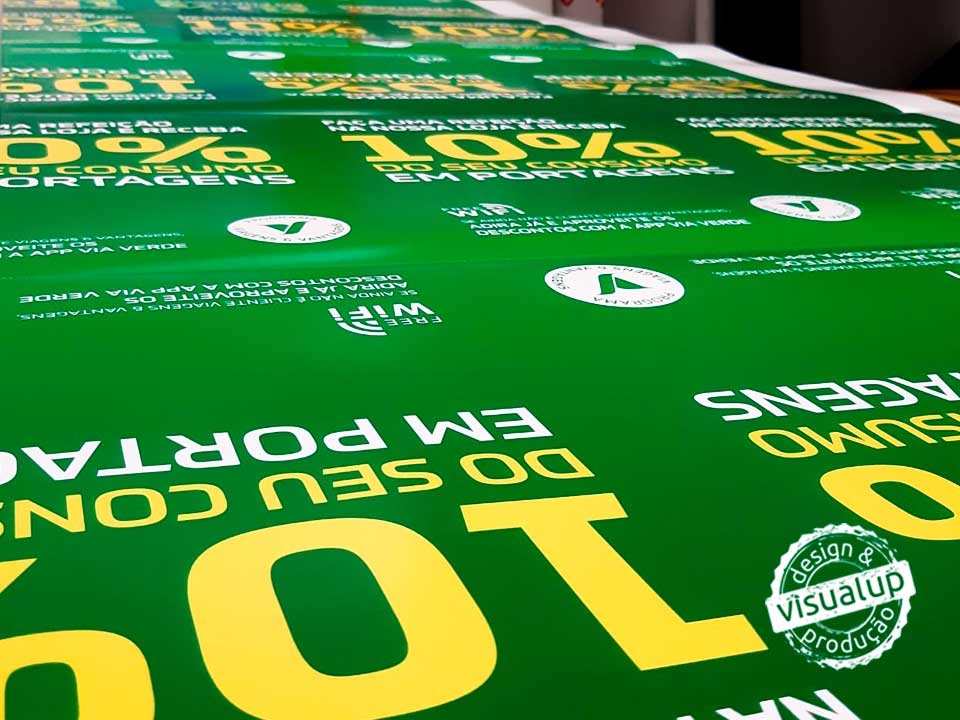
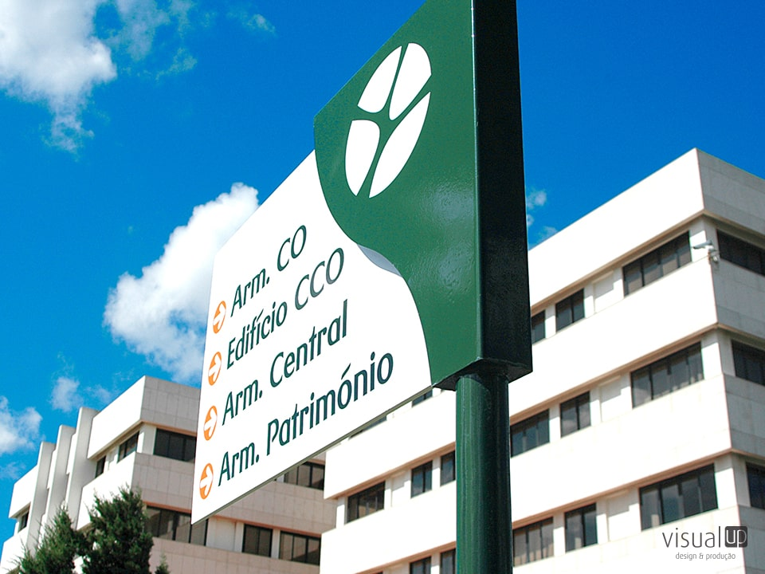
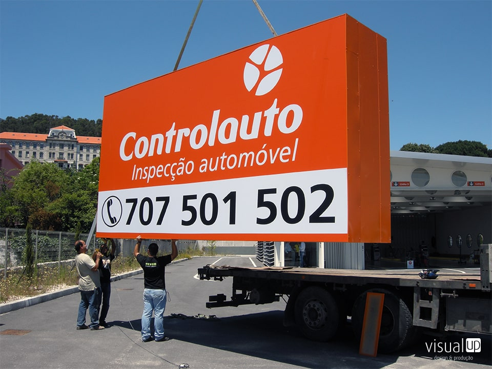

SERVIÇOS
Produção de material de comunicação.
Decoração de Espaços Comerciais
Aposte em projetos 360º de remodelação e decoração de interiores de acordo com os seus objetivos de negócio.
Produção Gráfica e Digital: Material de Comunicação Visual
Assegure produção do material gráfico de comunicação e publicidade de qualidade para dar mais visibilidade e autoridade à sua marca.
Conceção, Produção e Montagem de Decoração de Montras e Fachadas
Apresente montras e fachadas que convidem os clientes a entrar, despertem o interesse e motivem o comportamento de compra.
Produção de Sinalética Interior e Exterior para Empresas
Tenha materiais de sinalética que aumentem a notoriedade da sua marca, atraiam mais clientes e facilitem a identificação de espaços.

Mais Serviços de Material de Comunicação e Produção de Publicidade
Aumente a notoriedade da sua empresa junto de potenciais clientes e divulgue os seus produtos e serviços.ócio.
DECORAÇÃO DE ESPAÇOS COMERCIAIS
Criar um ambiente físico confortável e com personalidade potencia a produtividade e o valor da sua empresa.
O local de trabalho deve ter um ambiente criativo, inovador e estimular todo o potencial da sua equipa, por isso a VisualUp conta com um serviço de excelência na decoração de espaços comerciais.
Estas são algumas das questões que determinam a conceção dos espaços tidos em conta quando desenvolvemos o seu projeto integrado:
• A sua empresa tem atendimento ao público?
• Qual a sua área de negócio?
• O seu espaço comercial tem exigências específicas?
• Costuma reunir com clientes na sua empresa?
A Visual Up desenvolve e implementa projetos de comunicação visual e decoração de espaços comerciais de acordo com os seus objetivos de negócio.
DECORAÇÃO DE ESPAÇOS COMERCIAIS
1
MELHORE A RELAÇÃO ENTRE OS COLABORADORES
Grandes entidades, como a Google e o Facebook, mostraram a importância de trabalhar num ambiente profissional, mas descontraído.
Cada espaço na sua empresa tem uma função e deve ser idealizado e desenhado de forma a facilitar os objetivos daquela área de trabalho.
A correta conceção e organização do seu espaço corporativo permite à sua empresa:
• Aumentar a produtividade das equipas;
• Melhorar a comunicação entre departamentos;
• Incentivar a relação saudável e positiva entre colaboradores;
• Respeitar o espaço de trabalho de cada trabalhador;
• Minimizar ou evitar conflitos.
2
ESPAÇOS EFICIENTES
Estética e funcionalidade devem coexistir.
O desenho de um espaço de trabalho funcional, com uma correta organização das zonas de trabalho e de lazer, tem impacto direto na satisfação e bem-estar dos seus colaboradores promovendo a rentabilidade das equipas.
Os nossos projetos de decoração de espaços comerciais e decoração de eventos corporativos são focados em:
• Melhorar bem-estar e conforto dos seus colaboradores;
• Promover o rendimento de trabalho da sua equipa;
• Prevenir acidentes no local de trabalho;
• Reduzir custos operacionais.
3
TRANSMITA A PERSONALIDADE DA SUA EMPRESA
As primeiras impressões são tudo!
A funcionalidade e decoração de espaços comerciais e decoração de eventos corporativos refletem a personalidade e os valores da sua empresa.
Passe a mensagem de que é uma organização atenta às tendências e que tem a preocupação com o bem-estar dos seus colaboradores e clientes.
Precisa de um Projeto de Decoração do seu Espaço Empresarial?
PRODUÇÃO GRÁFICA E DIGITAL: MATERIAL DE COMUNICAÇÃO VISUAL
A produção gráfica de material de comunicação visual significa comunicar através de qualquer suporte com imagem, dando visibilidade e autoridade à sua marca.
Utilizar material de comunicação e publicidade com identidade própria continua a ser indispensável para qualquer negócio porque confere credibilidade a qualquer empresa.
Conheça todas as vantagens da produção gráfica e algumas das nossas soluções para destacar a imagem da sua marca.
VANTAGENS DA PRODUÇÃO GRÁFICA DE MATERIAL DE COMUNICAÇÃO VISUAL PARA O SEU NEGÓCIO
1
AUMENTE A CREDIBILIDADE DA SUA MARCA
Um empresário com um cartão de visita ou materiais corporativos personalizados fortalece uma negociação, pois transmite uma imagem profissional e cuidada.
Ao investir na produção gráfica de valor acrescentado destaca-se e transmite preocupação na sua missão.
2
CAUSE IMPACTO NO SEU PÚBLICO-ALVO
Ao contrário dos meios digitais, um suporte físico dá mais tempo aos clientes para absorverem a informação que procura transmitir. Existem menos fontes de distração e a mensagem promocional passa com maior eficácia.
O design do produto / equipamento tem também a capacidade de apelar à atenção dos clientes. Certos elementos causam um maior impacto visual e evitam o sentimento de indiferença à, tais como:
• Um conceito gráfico bem desenhado;
• Um layout bem estruturado;
• Uma impressão digital dos suportes de comunicação com qualidade.
• Acabamentos dos equipamentos.
3
CONQUISTE MAIS CLIENTES
A comunicação transmitida através das peças certas aumenta a probabilidade da sua organização ficar retida na memória dos clientes.
Alguns dos materiais de publicidade impressos são portáteis e estão sempre disponíveis! São palpáveis e manuseáveis, o que é valorizado por muita gente. Tem ainda a vantagem de os clientes poderem guardar esses suportes para posterior reaproveitarem.
SERVIÇOS DE COMUNICAÇÃO, IMAGEM E PUBLICIDADE OFERECIDOS PELA VISUAL UP
Projetos de Decoração Integrada
A personalidade da sua marca é o que a torna única e a diferencia da concorrência. Desta forma, os suportes publicitários e de comunicação devem e têm de refletir os valores do seu negócio.
O mesmo acontece com a decoração do seu espaço comercial, organização ou escritório. O design da comunicação e as peças gráficas devem ser coerentes.
Consciente da importância de harmonizar toda a comunicação, a Visual Up compromete-se a desenvolver o projeto da sua empresa de raiz e de forma integrada.
Decoração de Eventos Corporativos
Os eventos corporativos são marcos importantes na história das empresas, mas a escolha de todos os materiais de decoração pode ser mais complexa do que aparenta.
O nosso objetivo é oferecer aos seus participantes uma experiência única e tornar o evento memorável. A Visual Up desenvolve e implementa todo o projeto para que possa concentrar-se noutras atividades-chave do seu negócio.
Com os nossos serviços, garantimos à sua empresa um evento:
• Visualmente bem estruturado e organizado;
• Adaptado ao local;
• Com decoração funcional e confortável;
Stands e Feiras Comerciais
As feiras comerciais são eventos com enorme potencial.
Os projetos da Visual Up visam:
Desenvolver e implementar espaços funcionais potenciando a comunicação e o contacto com os clientes;
Reuniões Empresariais
Em reuniões empresarias, congressos, workshops em muitas das ocasiões é necessário personalizar o espaço de forma a receber bem os participantes / convidados.
A Visual-Up tem uma vasta experiência na área e concebe o projeto e implementa o acordado para que possa concentrar-se, em exclusivo, na preparação do evento.
Produção Gráfica de Material Decorativo
Os formatos standards (vulgarmente on line á distância de um click) não se adaptam às medidas de todas as empresas nos projetos personalizados e únicos.
A customização é um fator-chave na Visual-Up. Tanto a nível de design, como na escolha na adaptação dos formatos e materiais às infraestruturas.
Os nossos profissionais dedicam especial atenção ao seu briefing e à identidade visual da sua marca.
Desta forma, criamos projetos originais e sem precedentes!
A nossa produção de material gráfico de qualidade oferece um grande leque de opções como:
• Material corporativo;
• Flyers;
• Cartazes;
• Catálogos;
• Expositores;
• Balcões promocionais;
Montagem e Acabamentos
Seja qual for o evento ou ação da sua empresa, a Visual Up garante-lhe um acompanhamento completo na montagem e acabamento de peças gráficas ou comunicação visual.
Estamos ao lado dos nossos clientes em todo o processo, desde a conceção e design da comunicação, passando pela produção do material gráfico até à decoração total.
ENTREGUE A PRODUÇÃO DA COMUNICAÇÃO DA SUA EMPRESA A ESPECIALISTAS
Um projeto bem concebido e a qualidade de produção gráfica do material gráfico e equipamentos são dois princípios que norteiam a nossa atividade.
PRODUÇÃO E MONTAGEM DECORAÇÃO DE MONTRAS E FACHADAS
A decoração e a publicidade em montras e fachadas é um meio eficaz para atrair novos clientes, vender mais e reforçar a notoriedade do seu negócio.
Coloque-se no lugar de um potencial cliente, se for preciso saia à rua, observe do lado de fora o seu espaço comercial e questione-se:
• A sua empresa está devidamente identificada no exterior?
• Sem entrar, consegue perceber os produtos ou serviços que comercializa?
• A sua decoração destaca-se do ambiente em redor e chama a atenção?
Se respondeu não a alguma destas questões, tudo bem! Explicamos-lhe porque deve apostar na renovação da decoração da montra ou fachada do seu edifício empresarial.
VANTAGENS DA PUBLICIDADE EM MONTRAS E FACHADAS
1
INVISTA ESTRATEGICAMENTE
A publicidade de montras e fachada trata-se de um investimento estratégico, com custos mais reduzidos, quando comparado com outros suportes publicitários.
A decoração de montras com a colocação de um vinil autocolante – por exemplo – vai destacar o seu espaço da concorrência, estimulando o comércio e o ato de compra dos seus clientes.
2
ATRAIA MAIS CLIENTES
A montra é o cartão-de-visita do seu espaço comercial, é a primeira impressão que os clientes têm do seu negócio.
Os projetos de decoração de montras e fachadas têm o potencial de prender a atenção de quem passa. Convidam os clientes a entrar, despertam o interesse e motivam o comportamento de compra.
3
MOSTRE O QUE FAZ
A decoração de montras e fachadas é um suporte publicitário com leitura imediata.
Permite aos clientes conhecerem a sua empresa e a área de atuação do seu negócio, de forma rápida e direta. Reforça ainda a notoriedade da marca, reforça a sua identidade e marca o posicionamento da sua empresa no mercado.
Atraia mais clientes com uma fachada bem decorada
SERVIÇOS DE PUBLICIDADE MONTRAS E FACHADAS DA VISUAL UP
Projetos de Layout
A nossa equipa projeta o esboço do arranjo físico do seu escritório ou loja comercial, incluindo todos os elementos de design e decoração na proposta.
Ajudamos todos os clientes a desenvolverem a sua ideia, otimizando e potenciando o resultado. A Visual Up estrutura, desenvolve e implementa todo o processo.
Gostamos de dizer que construímos ideias!
Produção Digital de Grande Formato
A produção digital em grande formato tem a vantagem de criar um forte impacto visual.
Seja qual for o suporte, temos os equipamentos avançados necessários para a produção de diferentes tipos de peças gráficas, de todos os tamanhos e com qualidade de impressão garantida.
Stands e Feiras Comerciais
As feiras comerciais são eventos com enorme potencial.
Os projetos da Visual Up visam:
Desenvolver e implementar espaços funcionais potenciando a comunicação e o contacto com os clientes;
Produção de vários Tipos de Materiais
Trabalhamos com um vasto leque de materiais por forma a dar resposta às necessidades da sua empresa.
Dispomos de diferentes tipos de vinil para montras e fachadas, tais como:
• Vinil adesivo mate e brilhante;
• Vinil adesivo transparente;
• Vinil removível;
• Vinil fosco;
• Vinil microperfurado.
Produção Gráfica de Material Decorativo
Os formatos standards (vulgarmente on line á distância de um click) não se adaptam às medidas de todas as empresas nos projetos personalizados e únicos.
A customização é um fator-chave na Visual-Up. Tanto a nível de design, como na escolha na adaptação dos formatos e materiais às infraestruturas.
Os nossos profissionais dedicam especial atenção ao seu briefing e à identidade visual da sua marca.
Desta forma, criamos projetos originais e sem precedentes!
A nossa produção de material gráfico de qualidade oferece um grande leque de opções como:
• Material corporativo;
• Flyers;
• Cartazes;
• Catálogos;
• Expositores;
• Balcões promocionais;
Montagem e Acabamentos
Para além de projetarmos a decoração, realizamos a aplicação e montagem de vinil.
Este processo técnico pode ser muito exigente. Liberte-se das preocupações e garanta um trabalho de qualidade com profissionais certificados
CATIVE OS SEUS POTENCIAIS CLIENTES COM A AJUDA DA VISUAL UP
Estamos no mercado para ajudar as empresas a consolidarem a sua imagem institucional. Confie na experiência da Visual Up e renove a decoração da sua montra.
PRODUÇÃO DE SINALÉTICA INTERIOR E EXTERIOR PARA EMPRESAS
O uso de sintéticas tem uma dupla função. Existe sobretudo para direcionar e informar, mas também pode ser uma forte aliada na promoção das marcas e negócios.
Descubra por que razão as sinaléticas são tão importantes para a sua empresa e conheça os nossos serviços.
VANTAGENS DA PRODUÇÃO DE SINALÉTICAS PARA A SUA EMPRESA
1
AUMENTE A NOTORIEDADE DA SUA MARCA
As sinaléticas são uma potente forma de comunicação visual!
Num espaço empresarial com diversas indústrias, a instalação de sinalética permite também destacar a sua empresa da concorrência.
2
FACILITE A IDENTIFICAÇÃO DE ESPAÇOS
A orientação das pessoas num espaço é essencial, sob pena de criar frustração nos seus colaboradores, clientes ou visitantes. Todos os espaços privados ou públicos e sobretudo aqueles com atendimento ao cliente necessitam de sinalética exterior e interior.
Estes suportes de identificação são personalizáveis e servem para identificar todo o tipo de locais:
• Salas de reunião;
• Auditórios;
• Receção;
• WC;
• Sinalização de segurança.
3
ATRAIA MAIS CLIENTES
Um espaço sem identificação é um espaço sem identidade.
A utilização de sinalética com um bom design e de acordo com a identidade visual da sua empresa, funciona como um suporte publicitário. É mais um veículo para divulgar a sua marca.
Uma sinalética para lojas é um estímulo que compete pela atenção das pessoas e potenciais clientes. Sendo altamente visível e atraente, capta com eficácia a atenção do seu público-alvo.
SERVIÇOS DE PRODUÇÃO DE SINALÉTICAS, PRESTADOS PELA VISUAL UP
Produção de Sinalética Interior e Exterior
Procura identificar melhor o seu estabelecimento ou colocar placas identificadoras?
A Visual Up desenvolve e produz e todo o tipo de sinalética.
Temos em consideração o seu core business, bem como as suas necessidades. Personalizamos os suportes à medida do seu espaço, de acordo com os seus objetivos, dando especial atenção ao design e à qualidade da produção.
Existem vários tipos de sinalética para lojas e outros espaços corporativos:
• Sinalética luminosa;
• Caixas de luz;
• Reclames luminosos com acabamento em tela translúcida ou em acrílico;
• Reclames luminosos em monobloco / 3D;
• Sinalética em acrílico, madeira, aço inox;
• Placas sinalética exterior;
• Placards.
Sinalética Luminosa
Este tipo de sinalética é vantajoso em condições de fraca luminosidade ou durante a noite.
O reclame luminoso pode ser visto a grandes distâncias.
Sinalética em Acrílico

A sinalética em acrílico é um suporte ideal para oferecer indicações, tanto no interior como no exterior de um espaço.
Este material confere ainda uma imagem cuidada, moderna e profissional.
Num edifício empresarial com diversas indústrias, a presença de uma sinalética ou de placas identificadoras, localiza a sua organização entre as demais empresas.
Caixas de Luz
Incluir uma caixa de luz é mais um elemento de destaque. Torna a montra e fachada de uma loja, escritório ou armazém mais visíveis.
As caixas de luz iluminam também a entrada de um espaço criando um ambiente agradável e convidativo. Torna-se mais um atrativo visual para a sua empresa.
Existem dois tipos de iluminação:
1 - Caixas de luz convencionais;
2 - Caixas de Leds.
Reclames Luminosos

Este tipo de anúncios são poderosos suportes publicitários. São personalizáveis, podendo assumir diferentes formatos e incluir vários tipos de iluminação.
Na Visual Up, estudamos o local, o seu tipo de negócio e oferecemos um design adaptado à sua empresa.
Produção em Diferentes Materiais
Cada empresa tem o seu ADN, a sua forma de comunicar. Os suportes visuais devem respeitar as cores e os tons da marca e serem coerentes em todas a plataformas.
A Visual-Up oferece diferentes tipos de materiais, com o objetivo de personalizar a sinalética à sua marca. Acompanhamos os nossos clientes no processo de decisão, tornando mais fácil a escolha dos suportes e materiais.
Produzimos sinaléticas em materiais como:
• Madeira;
• Acrílico;
• Metal;
• Alumínio;
• Aço inox;
• PVC.
Displays e Pontos de Venda
Os espaços competem pela atenção dos clientes e consumidores.
Um display para pontos de venda é um elemento diferenciador. Trata-se de um poderoso dispositivo de marketing, adaptável à promoção de diversos produtos.
Este formato tem como vantagens principais para a sua empresa:
• Grande impacto visual;
• Montagem e desmontagem simples;
• Fácil portabilidade;
• Acessibilidade de preço.
Montagem e Acabamentos
Realizamos todo o trabalho de montagem de sinalética e os acabamentos necessários.
Trabalhamos em estreita sintonia com os nossos clientes e acompanhamos todo o processo.
CONFIE NA VISUAL-UP E ENTREGUE A PRODUÇÃO DA SINALÉTICA A ESPECIALISTAS
Somos especialistas na produção, design e montagem de sinalética interior e exterior.
Procuramos sempre adaptar as nossas soluções de sinalética à realidade e exigências dos nossos clientes, oferecendo versatilidade e personalização.
Concretize a sua ideia e dê visibilidade ao seu negócio.
MAIS SERVIÇOS DE MATERIAL DE COMUNICAÇÃO E PRODUÇÃO DE PUBLICIDADE

A comunicação através de suportes publicitários offline continua a ser essencial para as empresas, pois são importantes ferramentas para estabelecer uma forte presença junto do seu público-alvo.
A produção de publicidade de material corporativo, a decoração de viaturas, ou a produção de merchandising têm como objetivo aumentar a notoriedade da sua empresa junto de potenciais clientes e consolidar a sua identidade no mercado.
As vantagens para a sua empresa são:
• Divulgar os seus produtos e serviços;
• Personalizar as peças de comunicação à sua imagem;
• Aumentar a retenção de informação na mente dos consumidores;
• Reforçar a notoriedade da sua marca;
• Ganhar maior reputação no mercado;
• Destacar-se da concorrência;
• Aumentar o número de clientes.
OS NOSSOS OUTROS SERVIÇOS DE COMUNICAÇÃO VISUAL
Design de Equipamentos

Imaginou um equipamento específico para a sua empresa, mas não a encontra à venda? Conte-nos tudo.
A Visual Up concebe todos os elementos gráficos para ambientes (internos e externos), desenvolvendo a conceção e construção de diferentes equipamentos à sua medida.
Desenhamos soluções de design para a sua empresa como:
• Balcões à medida do seu espaço;
• Expositores personalizados;
• Peças de comunicação originais.
Produção de Material de Comunicação
Qualidade é a palavra de ordem na impressão de materiais gráficos. Estes suportes publicitários são o espelho do seu negócio e devem primar pela boa aparência e pelo design de excelência.
Na Visual Up concebemos os projetos desde a escolha dos materiais até à produção dos mesmos.
Produzimos peças gráficas que vão aumentar a notoriedade do seu negócio:
• Material corporativo;
• Flyers;
• Cartazes;
• Roll ups;
• Bandeirolas;
• Entre outras soluções.
Decoração de Viaturas
Se a sua organização conta com uma frota automóvel, mesmo que pequena, aproveite este espaço para divulgar a sua marca.
A decoração de viaturas é uma excelente oportunidade para alcançar o seu público-alvo. É um suporte publicitário económico e com enorme potencial. Esteja a viatura a andar ou parada, vai continuar a promover a sua marca.
Existem múltiplas opções de materiais e designs para a decoração da sua frota corporativa. A Visual Up apresenta aos clientes propostas de valor e realiza todos os trabalhos, incluindo a impressão gráfica e montagem.
Produção de Merchandising
Uma estratégia de merchandising bem executada proporciona uma boa experiência aos clientes, reforça a interação com a marca e tem impacto positivo nas suas vendas, bem como um bom aumento da notoriedade na mente dos consumidores.
Apresentamos-lhe várias ideias e produzimos todo o tipo de merchandising:
• T-shirts;
• Porta-chaves;
• Ímanes;
• Fitas de pescoço / lanyards.
Design Gráfico
O design é o elemento base da sua comunicação.
Confie numa empresa com experiência no mercado e conte com a Visual Up para a conceção e produção da sua imagem gráfica.
Acompanhamos as últimas tendências do design, criamos projetos de raiz adaptados à sua empresa e produzimos todas as peças com a qualidade solicitada.
CONFIE NA VISUAL UP PARA A COMUNICAÇÃO VISUAL DO SEU NEGÓCIO
A evolução da indústria gráfica tornou os serviços de produção e impressão gráfica mais económicos e acessíveis, mesmo para pequenas e médias empresas. Mas é importante contratar sempre um serviço de qualidade que garanta um design moderno, criativo e uma impressão de qualidade.
A Visual Up conta com 25 anos de experiência e posiciona-se na vanguarda do design e produção.
Temos experiência em projetos de design nos mais variados setores de negócio. Para nós, o nosso sucesso é o seu sucesso!
Partilhe a sua ideia e nós desenvolvemos um projeto à sua medida.